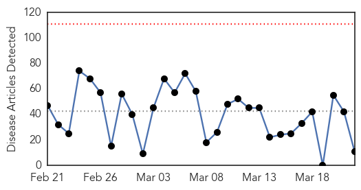
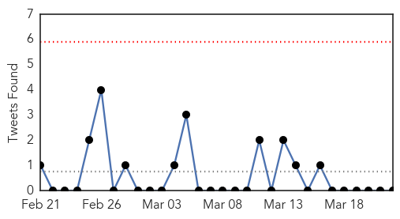
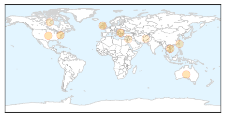

30 Day Trends
Web: 0 alerts, 0 warnings
Twitter: 0 alerts, 0 warnings
Top Articles:
- 0.942
- Tuberculosis still proving a threat in Northern Ireland
- 0.917
- Chicago Tribune
- 0.917
- Chicago Tribune
- 0.893
- Logan Daily News: Neighbors
- 0.866
- China says suspicious object 120 km from possible debris announced by Australia-Xinhua
- 0.866
- Timchenko's Stroitransgaz to build South Stream pipe in Bulgaria-sources
- 0.843
- Vietnam ranks 12th among countries suffering most from TB
- 0.744
- Taiwan to mark World TB Day ...｜Society｜WCT
- 0.637
- RN talks nursing and numbers
- 0.528
- Dirty water: More deadly than war
- 0.526
- When Water Scarcity Becomes Personal
Top Tweets:
-
No tweets found for Mar 22, 2014
Web/News Articles
Tweets
Article Locations
Article Confidences